※这篇文章也请AI（Claude Opus 4.1）帮忙制作，再由我部分自行补写更新哈哈 2024年12月吃的😄
这次要介绍的是位于恩纳村仲泊的「恩纳之驿 中休市场」内的冲绳面店「琵芭拉」。这里是以「人与人相连的村落产地直送市场」为概念的观光设施，是总是挤满许多观光客的人气景点🌺
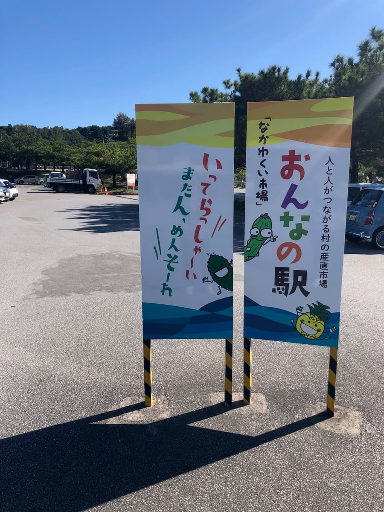
一进恩纳之驿的停车场，首先映入眼帘的是画着可爱苦瓜和凤梨角色的看板。上面还写着「再来，欢迎光临」这类冲绳方言的招呼语，让观光客心情雀跃呢😊 这天天气也很好，是蓝天万里的绝佳观光天气☀️
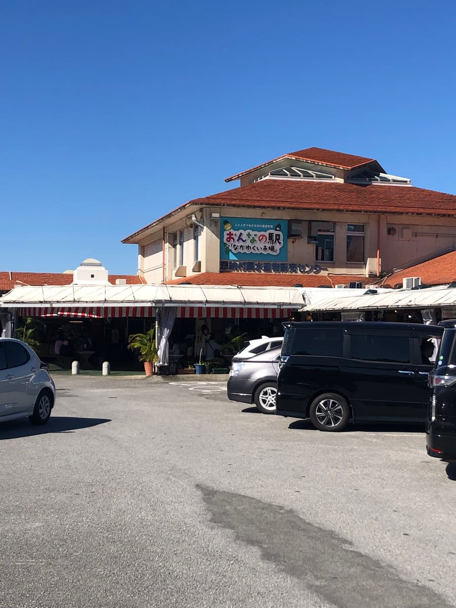
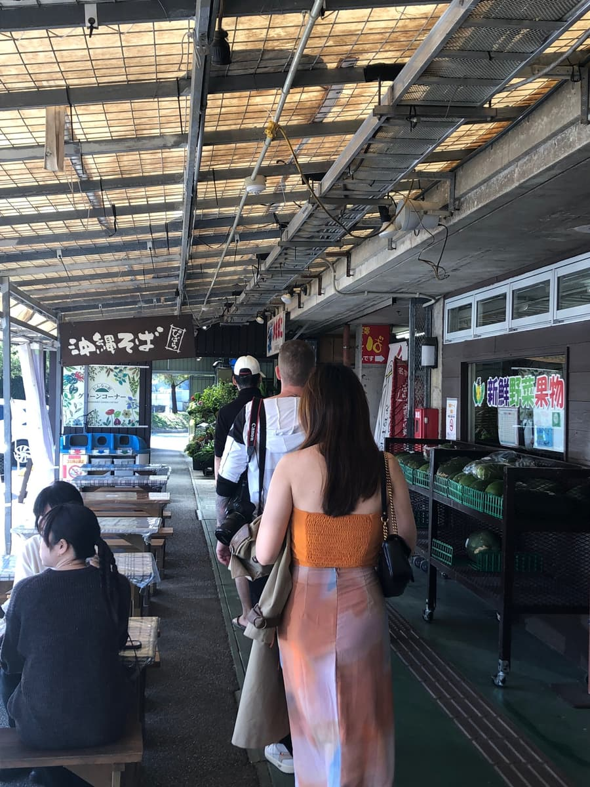
进到设施内，真的就是道之驿的氛围，当地的农产品、海产和伴手礼整齐地排列着。其中这次的目的地「冲绳面 琵芭拉」就开在美食街区域。其实还有海鲜丼的店等，每家看起来都很好吃，让人眼花撩乱😋
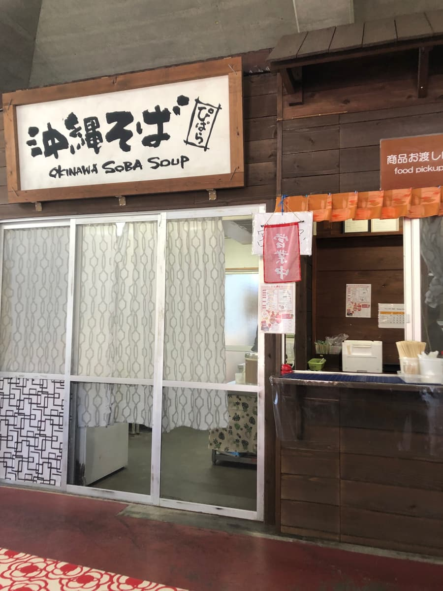
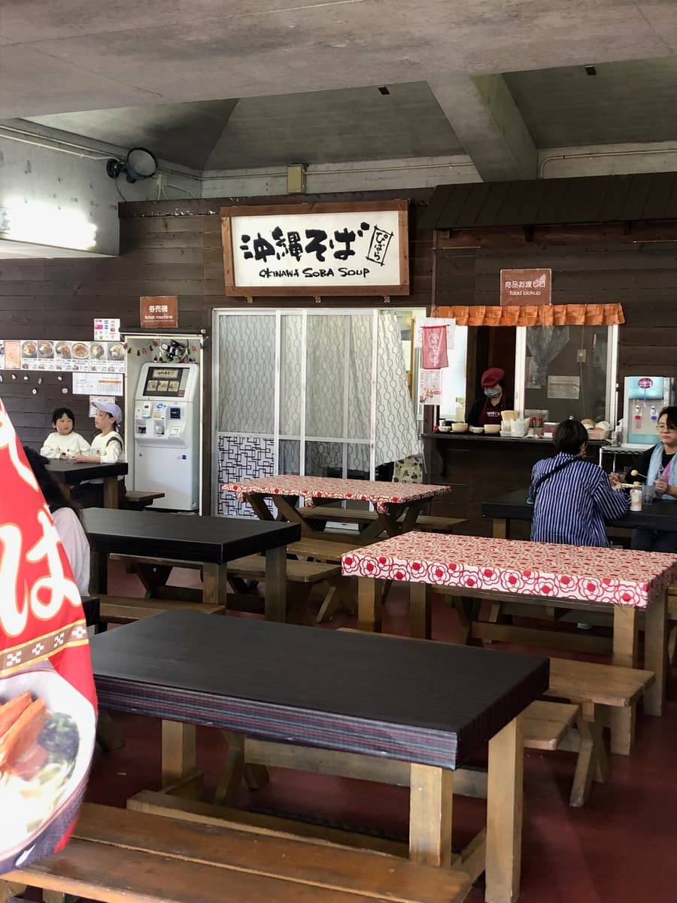
站在「琵芭拉」的售票机前，附照片的菜单整排陈列。其中决定点被介绍为「人气商品」的「三层肉面」。
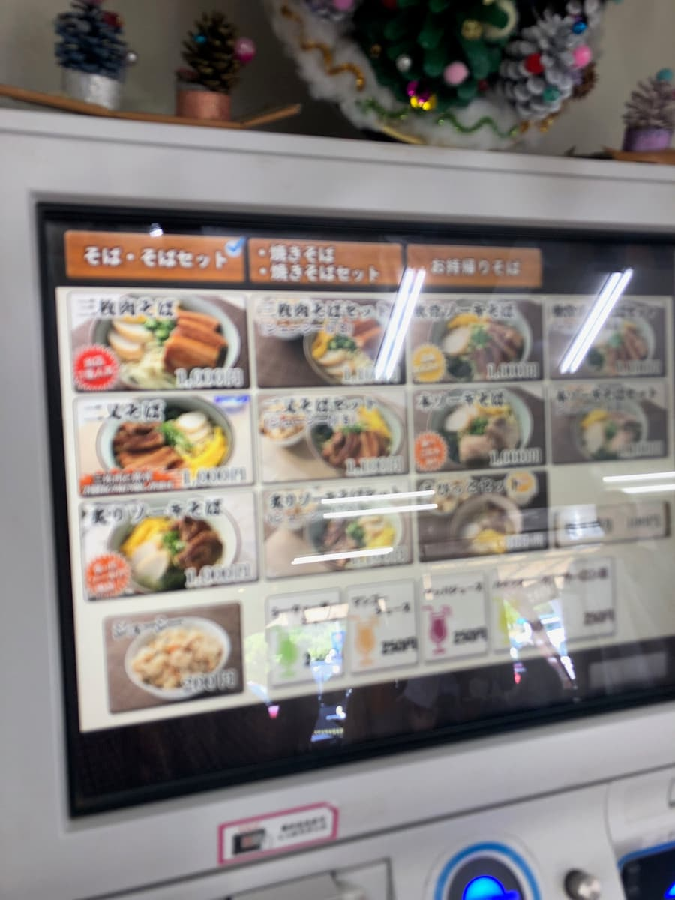
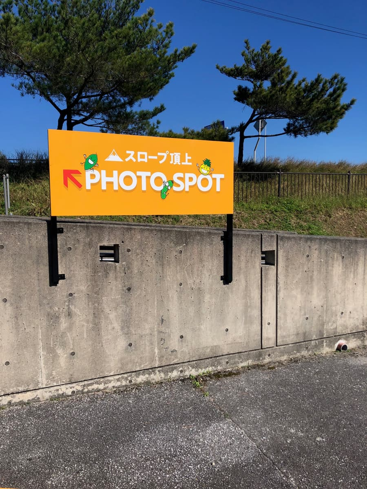
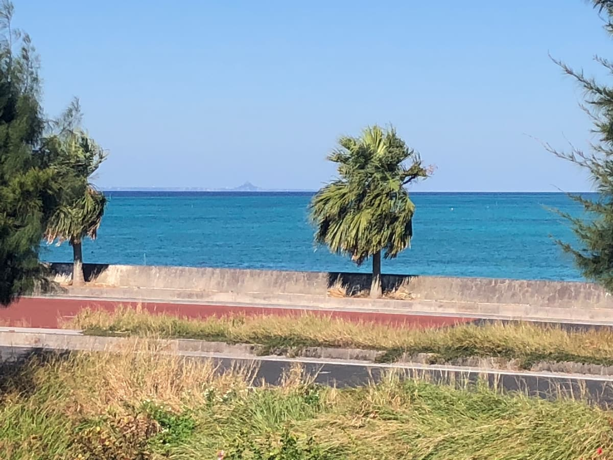
恩纳之驿外面是一片美丽的冲绳海🌊 天气好的日子，远处还看得到伊江岛的Tacchu（城山）喔。也有拍照景点📸，斜坡顶端的拍照景点可以拍到很棒的景色😄
过了一会儿号码被叫到，在柜台领取了「三层肉面」。碗里有漂亮摆盘的三层肉、细面、葱，以及浮着稍微多一点油的汤。先照例品尝汤头吧😊
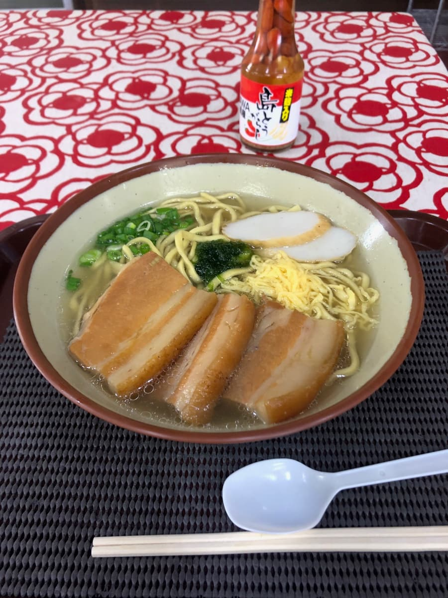
喝一口汤，在感受到猪骨醇厚的同时，柴鱼高汤也很明显。不过感觉油稍微偏多。但这样也是普通好吃。在炎热的冲绳走了一圈之后，这种偏浓的汤头反而感觉渗进身体里。
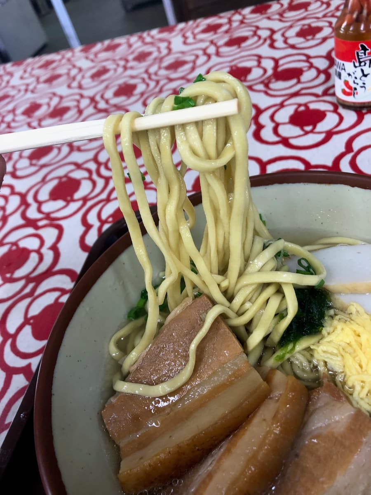
接着吃面。是带着缓缓卷曲的细面，口感偏软。和汤头的结合也很好，是呼噜呼噜很好入口的面。是连观光客也容易入口、没有怪味的温和面条🍜
然后是配料的三层肉，是偏甜的调味，味道入得很透。不过有些部分还留着筋感（口感偏韧），与其说入口即化，更是有嚼劲的成品。甜咸口味很有冲绳面王道的感觉，我想对第一次吃冲绳面的观光客也是容易接受的味道。
吃完在设施内逛逛，卖着很多新鲜的海产和当地蔬菜，挑选伴手礼也很开心呢🎁
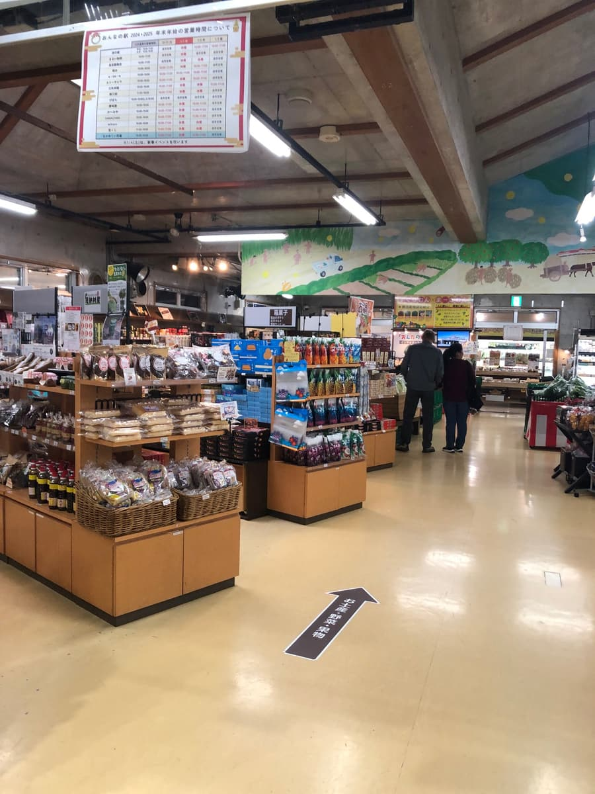
走到设施外面，蓝色的海与天空的对比真的很美，眼前是十足冲绳风情的景色。从停车场也看得到海，下车的瞬间就能享受冲绳的气氛，这点让人开心✨
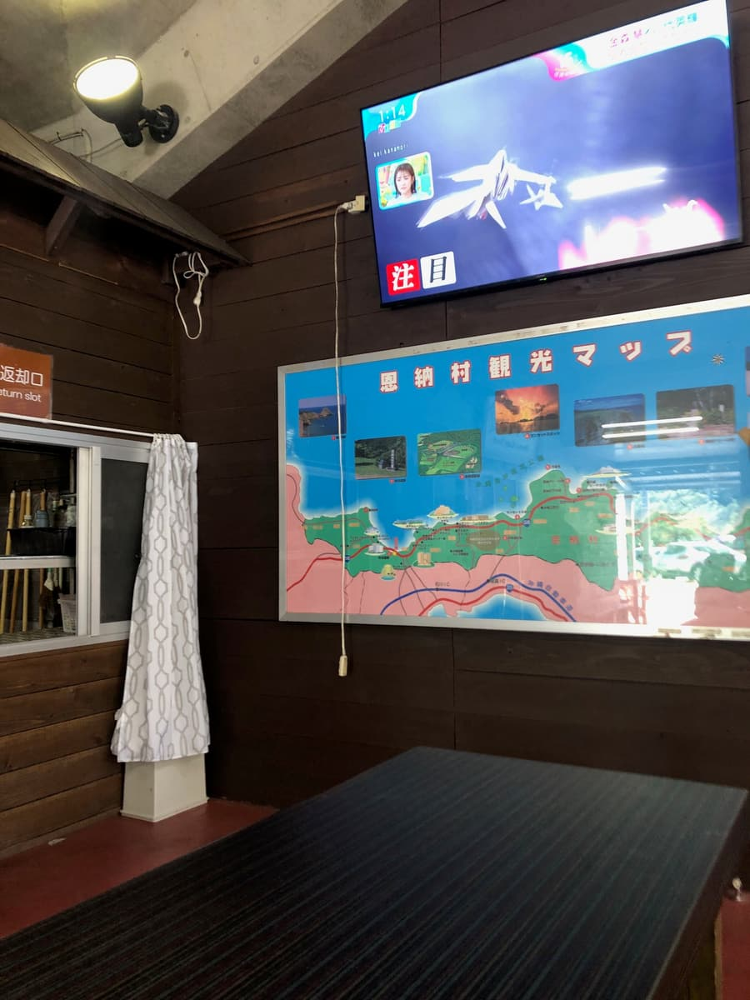
「恩纳之驿」虽然感觉是普通的道之驿，但我认为对观光客来说，是能轻松体验冲绳饮食与文化的好景点。除了冲绳面之外，还能享受海鲜丼、塔可饭等各种冲绳美食，很适合开车兼休息时顺道过去😄
评分（9分/15分）：这次「琵芭拉」的冲绳面，虽然不算特别有个性，但有着观光地特有的稳定美味，是普通好吃的感觉。到恩纳村观光时，作为可以边眺望美丽海景边享用冲绳面的好地方，要不要顺道来一次看看呢🌴
面：★★★☆☆（3）
汤头：★★★☆☆（3）
配料：★★★☆☆（3）